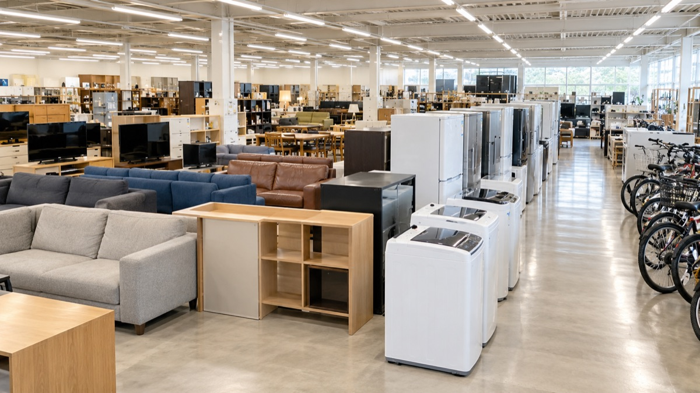

ECOL RECYCLE SHOP KUSHIRO
今週入った中古を、
入荷順に棚ごと見る。
冷蔵庫から除雪機まで。入ったものを新しい順に並べています。売れた品も残すので、店の動きがそのまま見えます。
掲載データ読込中…

今週入荷
カテゴリから探す
数字は販売中と取り置き中の点数（サンプルデータ）。
探しものから入る
条件で絞る
状態のみかた
ランクは仮の基準です（ECOLの検品体制に合わせて確定）。傷・汚れは商品ごとに文章で書きます。
店頭受取・配送のご案内
内容は仮です。要確認の項目はECOLの回答待ち。
店頭で受取
気になった商品はLINEか電話で取り置き相談。店頭でお渡しする流れを想定しています。
要確認 店頭営業の有無・受取時間・取り置き期間
近隣配送
釧路市周辺への配送を想定。対応エリアと料金は商品ごとにご案内します。
要確認 配送エリア・料金
大型は相談
冷蔵庫・洗濯機・ソファ・食器棚など。搬入サイズ、階数、住所をLINEで送ってください。
要確認 搬入料金・家電リサイクル対象品の引き取り
店舗情報
現買取サイト掲載情報（kushiro.kaitoriok.com）。販売用の営業時間・店頭営業は要確認。
- 店名
- 釧路買取サービス リサイクルショップ ECOL（エコル）
- 所在地
- 〒085-0048 釧路市駒場町3-5-1 地図を開く
- 営業時間
- AM9:00〜PM5:00（日曜休）販売は要確認
- 駐車場
- 未確定
気になったら、LINEで取り置き相談。
商品名と写真を送るだけで話が進みます。大型のサイズ確認もここから。
LINEは現買取サイトの友だち追加URLを仮置き（販売用に分けるかは要確認）